비판 리뷰 전후
구상안 3개를 골라 Codex 워커에게 비판적 리뷰어 역할을 맡기고(critique.md), 그 비판을 수용해 컨셉 규칙과 시안을 v2로 고쳤다(response.md, pitch-v2.md, v2/).
왼쪽이 v1, 오른쪽이 v2. v1 원본 폴더는 그대로 두었다. 목업 이미지는 AI 생성 시안이며 실행 빌드 화면이 아니다.
그림자 경매
HTML 시안 · 화면 A
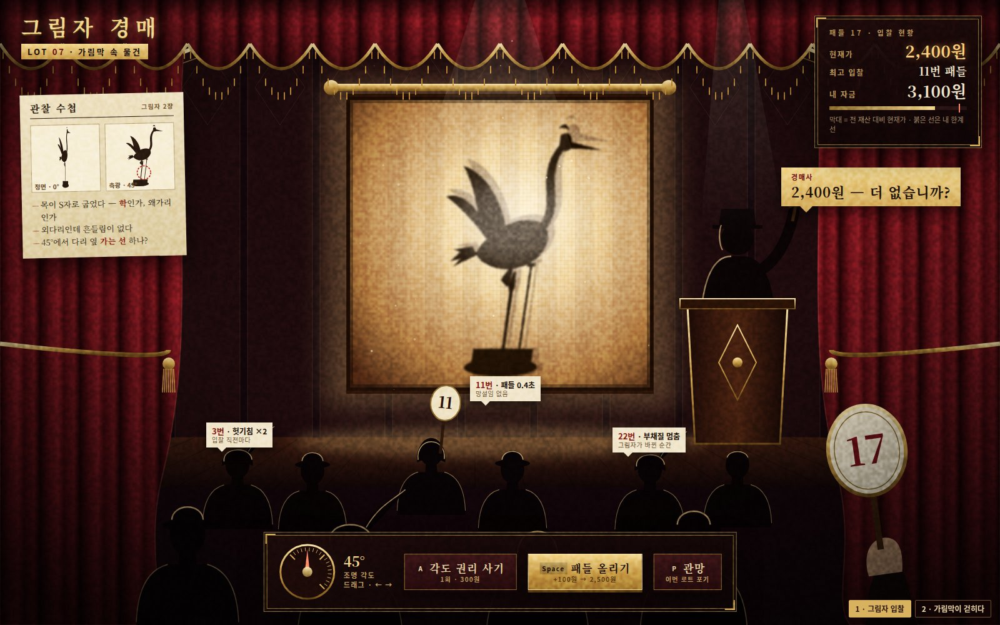
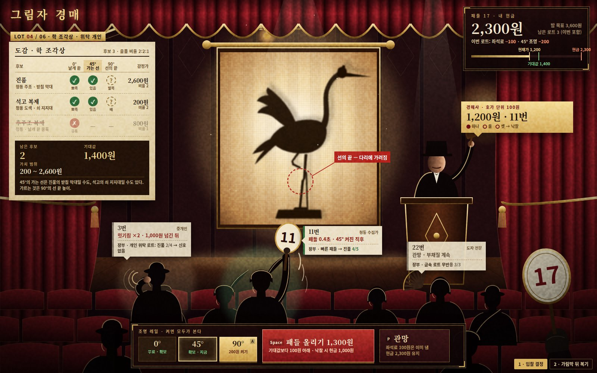
HTML 시안 · 화면 B
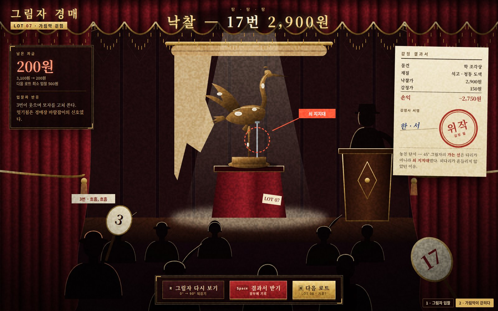
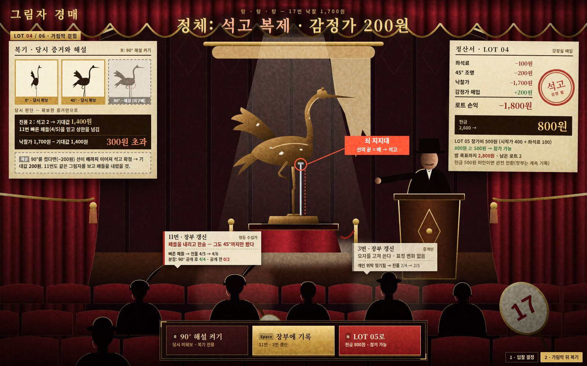
목업 이미지 · A


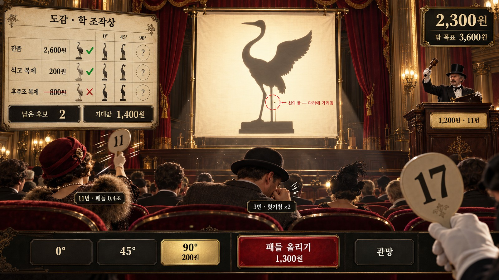
목업 이미지 · B


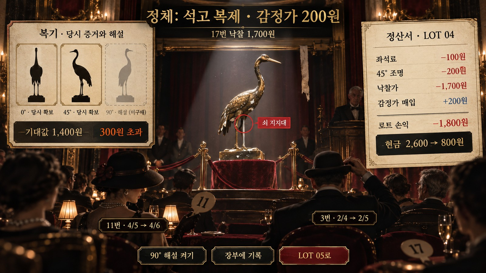
Codex 비판 (critique.md)
판정 (한 문장)
현재 컨셉은 입찰 전에 가치를 추론할 근거가 부족하고, 실패 뒤에만 정답을 알려주는 구조라서 추리 경매보다 한 번 보고 끝나는 위작 반전극으로 실패할 가능성이 크다.
치명적 문제 (최대 3개, 각각 근거)
- 그림자로 알 수 있는 사실과 돈을 걸어야 하는 판단이 연결되지 않는다. 화면 A의 수첩은 ‘외다리’, ‘가는 선’, ‘흔들림 없음’을 제시하지만, 조각상이 흔들리지 않는 것은 위작의 증거가 아니다. 쇠 지지대 역시 석고·청동 도색이나 감정가 150원을 확정하지 않는다. 진품의 구조와 가격 기준 없이 화면 B가 이를 ‘놓친 단서’로 선언하면 추리가 아니라 사후 정답 통보다. ‘헛기침 ×2’, ‘패들 0.4초’도 신뢰도를 배울 기회가 없는데 B에서는 바람잡이의 신호로 확정된다. 실제 결정은 300원 정보 구매·입찰·포기지만, 어느 선택의 기대이익도 계산할 근거가 없다. 포기에 불이익이 없다면 확실한 물건만 기다리는 전략이 유리해질 수 있다.
- 실패가 다음 판단을 개선하기보다 암기와 진행 중단을 만든다. 같은 학과 같은 반응이 반복되면 두 번째 판에는 지지대와 3번만 기억하면 된다. 반대로 진위와 반응의 관계를 무작위로 뒤집으면 배운 것이 무효가 된다. B의 잔금은 200원, 다음 최소 입찰은 500원인데 ‘다음 로트’만 제공한다. 파산인지, 관전인지, 회복 가능한지 불명확하다. ‘그림자 다시 보기’도 최초에 보지 못했던 90°까지 공개한다면 실패 당시의 판단 가능성을 검토하기 어렵다. 《Modern Art》의 경매와 《Papers, Please》의 단서 대조에 비해, 현재 제시된 차별점은 가림막과 반전 연출에 집중돼 있다. 각도 선택이 정보와 입찰 경쟁을 함께 바꾸지 않으면 기믹 하나로 소진된다.
- HTML은 목업의 감각과 핵심 행동을 충분히 구현하지 못하며, 그 격차가 1주 제작의 병목이다. A의 중앙 그림자는 크지만 실제 조작부는 하단의 작은 다이얼이고, 이미 45°와 그림자 두 장이 보이는데 ‘각도 권리 사기’가 활성 상태처럼 남아 있다. 구매·조절·관찰의 순서가 읽히지 않는다. B의 붉은 원은 정답을 보여주지만, 검은 인물 덩어리에서는 3번의 웃음과 모자 고침을 판독할 수 없다. 목업의 객석 깊이, 인물 표정, 장갑 낀 손, 금속 장식과 벨벳 재질이 HTML에서는 평면 도형과 반복 무늬로 대체됐다. 이는 장식 차이가 아니라 사람의 반응을 읽고 패들을 드는 경험의 손실이다. 정지 이미지와 일부 스크립트만으로 소리·움직임·입력 지연은 확인할 수 없다. 단서가 보이는 투영, 인물 반응, 공개 전환과 음향까지 맞추는 작업이 단순 경매 로직보다 위험하다.
개선 요구
- [규칙] 사후 위작 설명 → 사전 검증 가능한 가설 대조로 변경. 진품·모조품의 구조와 가치 범위를 도감에 제시하고, 지지대 하나로 정답이 확정되지 않게 한다. 각도별 관찰로 후보와 합리적인 입찰 상한을 좁힐 수 있어야 한다.
- [규칙] 장식적인 입찰자 반응 → 학습 가능한 정보원으로 변경. 인물별 지식·이해관계·반응의 신뢰도를 정하고 여러 로트에서 확인하게 한다. 같은 기침이 언제 유효했는지 장부에 남겨, 반복 플레이가 번호 암기를 넘어가게 한다.
- [규칙] 모호한 비용·실패 상태 → 명시적인 경제와 종료 조건으로 변경. A의 3,100원이 각도 비용 차감 전이라면 300원 지불 후 2,900원 낙찰은 불가능하다. 구매 시점과 잔액을 통일하고, 입찰 불능이면 파산·회복·종료 중 실제 규칙을 표시한다. 복기는 당시 확보한 관찰과 추가 해설을 구분한다.
- [규칙] ‘헤드리스 ◎’ → 검증 경계를 명시한 설계로 변경. 자금·입찰·각도 권리·마감·시드·반응 시각은 순수 C#의 정수와 ms로 판정한다. 각도별 단서 데이터도 고정한다. 다만 제시된
cos/sin기반 가로 축소는 실제 조명 투영의 증거가 아니며, 가는 선의 가시성과 기침의 식별성은 실제 화면·소리에서 별도로 검증한다.
- [시안] 분산된 상태와 설명문 → 행동 직후 확인되는 피드백으로 변경. 권리 구매 전후를 구분하고 다이얼 주변에 남은 사용권·비용을 표시한다. 각도 변화와 그림자 변화를 연속 연결하고, 입찰에는 손·패들 상승, 경매사의 호응, 가격 갱신을 동기화한다. B는 공개→지지대 확인→감정→손실 순으로 시선을 유도한다.
- [시안] 평면 대체로 일정 맞추기 → 첫 장면의 감각 완성도를 먼저 검증하는 일정으로 변경. 첫 로트에서 목업 수준의 공간·재질·인물 반응과 A→B 전환을 실제 입력으로 검증한다. 1주 안에 불가능하면 필요한 콘텐츠·기능 범위 조정안을 제시하며, 승인 없이 품질이나 범위를 낮추지 않는다.
유지할 것
유료 각도 선택과 낙찰 후 실물 공개의 연결. 단, 공개 장면은 놀림이 아니라 플레이어가 자신의 판단 근거를 검증하는 순간이어야 한다.
수용 내역 (response.md)
73 그림자 경매 — 비평 수용표 (v1 → v2)
대상: critique.md(2라운드, 전체 자료 기준). 결과 수용 8 · 부분 수용 1 · 기각 0. 규칙 원문은 pitch-v2.md, 시안은 v2/index.html(#a 입찰 결정, #b 복기)과 v2/prompts.json.
| # | 항목 | 판정 | 규칙에서 바뀐 것 | 시안에서 바뀐 것 |
|---|---|---|---|---|
| 치명 1 | 그림자 사실과 돈의 판단이 끊겨 있다 | 수용 | 로트마다 도감(후보 3개의 감정가·출품 비율·각도별 특징)을 입찰 전에 공개. 관찰로 후보를 지우면 기대값·가치 범위가 정수로 나온다(LOT 04: 1,400원 · 200~2,600원). '흔들림 없음'처럼 근거 없는 단서 삭제. 좌석료 100원과 밤 목표 3,600원으로 '관망만 하기'를 지는 전략으로 만듦 | A 왼쪽 수첩을 가설판으로 교체: 후보 3행 × 각도 3열(✓/✗/?), 후주조 줄 긋기, 하단에 남은 후보 2 · 기대값 · 범위. 자금 막대에 현재가·기대값·현금을 한 축으로 표시 |
| 치명 2 | 실패가 학습보다 암기·진행 중단을 만든다 | 수용 | 정체는 도감 비율로 씨드 추첨(같은 학도 매번 다름). 인물의 전문·이해관계·반응 규칙은 고정, 장부가 맥락별 적중률을 누적 → 남는 것은 '누가 무엇을 아는가'. 파산은 '관전 전환'(현금 < 다음 시작가 + 좌석료)으로 명시. 복기는 당시 확보한 각도만 '증거', 미확보 90°는 '해설'로 분리. 차별점: 조명 구매 = 공개(경쟁자도 봄) | B를 '위작 조롱' 대신 복기 장면으로: 0°·45° 금테(당시 증거) / 90° 점선 회색(해설·당시 미확보), 당시 판단(기대값 1,400 vs 낙찰 1,700 = 300 초과), 장부 갱신 카드, 다음 로트 참가 가능 여부와 관전 전환 기준 |
| 치명 3 | HTML이 목업의 감각·핵심 행동을 못 담고, 그게 1주 병목 | 부분 수용 | 병목 지적은 전부 수용 → pitch-v2의 1주 계획이 한 로트의 감각 완성을 3일차 관문으로 둔다. 범위 부족 시 로트 종류·인원 축소안을 사람에게 제시 | 조작 순서를 한 줄로(조명 레일 → 입찰 → 관망), 구매 완료 각도는 비활성·'확보' 표시, 반응자는 하이라이트+제스처(패들 궤적과 0.4초 타이머, 입가의 손과 기침 파문). 부분인 이유: 오프라인 단일 HTML 벡터로는 목업의 표정·장갑·벨벳 재질을 사진 수준으로 재현할 수 없다. HTML은 정보 위계·동작 판독의 기준, 재질·인물 연기는 prompts.json 이미지와 Unity 3일차 관문이 기준이다(남은 격차로 명시) |
| 개선 1 | 사후 위작 설명 → 사전 가설 대조 | 수용 | 가는 선은 진품(받침 막대)·석고(쇠 지지대) 둘 다에 나타나 단독으로 확정 불가. 가르는 특징은 90°에서만 보이는 선의 끝 높이(발목/배). 0° 날개 끝이 후주조를 가른다 | A 그림자에 선의 윗끝이 다리에 가려지는 모호함을 그대로 그림, 가설판 90° 열은 '?'. B 해설 썸네일에서 선이 배까지 이어짐 |
| 개선 2 | 장식 반응 → 학습 가능한 정보원 | 수용 | 반응 규칙 고정: 반응 지연은 확신 60%↑ 400ms, 아니면 1,200ms↑. 3번은 경매장 위탁 로트에서만 진위를 아는 바람잡이, 개인 위탁 로트에선 1,000원 넘길 때의 버릇. 11번은 공개 그림자만 보고 선을 받침 막대로 과신. 장부는 반응 × 맥락(위탁자·공개 최대 각도·재질) 분할 | A 반응 태그마다 장부 한 줄(11번 진품 4/5, 3번 개인 위탁 2/4 = 신호 없음), 위탁자 '개인'을 로트 표제에 표시. B에서 11번 기록이 '90° 공개 후 4/4 · 공개 전 0/2'로 갈라지는 순간을 보여 줌 |
| 개선 3 | 모호한 비용·실패 → 명시적 경제·종료 | 수용 | 조명비는 산 즉시 차감, 화면의 현금은 항상 차감 후 값. 현금 흐름 3,000 → … → 2,300(A) → 800(B)을 로트별로 대조 가능하게 기재. 낙찰품은 감정가로 즉시 환급. 관전 전환·밤 실패 조건 명시 | A 자금판: 현금 2,300원(좌석료 −100·45° −200 반영), 입찰 버튼에 '낙찰 시 현금 1,000원'. B 정산서: −100 −200 −1,700 +200 = −1,800, 2,300 → 800, LOT 05 참가비 500원 → 참가 가능, 관전 전환 기준 500원 미만 |
| 개선 4 | '헤드리스 ◎' → 검증 경계 명시 | 수용 | 장르 표기를 '규칙 헤드리스 ◎ / 그림자·반응 판독은 실제 플레이'로 바꿈. 자금·입찰·박자(3×1,200ms)·조명 이동(1,500ms)·가설 소거·장부·씨드 전략 시뮬은 순수 C#. 그림자는 cos/sin 가로 축소가 아니라 Unity 실광원·모델 투영으로 만들고 45° 모호/90° 판독을 실제 화면에서 확인 | 시안의 그림자는 참고 그림일 뿐 투영 계산이 아님을 prompts·pitch에 명시(시안 코드에 투영 수식 없음, 각도별 실루엣을 따로 그림) |
| 개선 5 | 분산된 상태·설명문 → 행동 직후 피드백 | 수용 | 조명 이동 중 호가 정지, 입찰 시 패들 상승·경매사 호응·가격 갱신을 한 이벤트로 묶음(헤드리스에서 같은 ms 틱) | A: 조명 레일에 0° 무료·45° 확보·90° 200원(모두가 봄)을 직접 표기, 레일 구매 시 램프 이동+그림자 교체+가설판 체크 갱신+현금 차감을 동시 재생. Space 입찰 시 패들 상승·가격판·경매사 말풍선·박자 초기화 동기화. B 시선 순서: 표제(정체) → 지지대 콜아웃 → 복기판 → 정산서 → 장부 |
| 개선 6 | 평면 대체 일정 → 첫 장면 감각 먼저 | 수용 | pitch-v2 'PoC 1주 계획/품질 관문': 1일 규칙, 2–3일 LOT 04 한 장면의 공간·재질·인물 반응·음향 → 실제 빌드 캡처 vs 시안 비교, 4일 A→B 전환과 입력 지연 실측(≤100ms), 5일 녹화 비교. 미달 시 범위안 제시, 품질은 낮추지 않음 | prompts.json이 HTML과 같은 문자열·숫자를 지정해 목표 이미지와 시안이 같은 규칙을 가리키게 함 |
유지한 것
유료 각도 선택과 낙찰 후 실물 공개의 연결. 공개 장면은 '위작 판정'이 아니라 당시 증거로 내린 판단의 검증으로 바꿨다.
남은 결함 (v2에서도 해결되지 않음)
- 기대값이 화면에 계산돼 나오므로 '계산기 게임'이 될 위험. 장부 해석(누구 반응을 얼마나 믿을지)이 계산 밖의 판단으로 충분히 무거운지는 시뮬과 사람 판정으로만 알 수 있다.
- 조명 = 공개 규칙은 좋은 트레이드오프지만, 경쟁자 상한 곡선을 잘못 잡으면 '절대 조명을 사지 않는' 전략이 우세할 수 있다. 1일차 씨드 시뮬 관문에 포함했다.
- HTML 시안은 벡터 실루엣이라 인물 표정·재질은 이미지·Unity 관문으로 넘긴다.
컨셉 v1
그림자 경매 (v1)
한 줄: 경매에 나온 것은 물건이 아니라 물건의 그림자다. 그림자만 보고 입찰한다
장르: 추리 · 경매 · 헤드리스 ◎
가림막 뒤 조명 하나, 그림자만 경매대에 비친다. 조명 각도를 한 번 바꿀 권리를 사서 실루엣을 다른 방향에서 본다. 경쟁 입찰자들의 반응(헛기침, 패들 드는 속도)도 단서. 낙찰 후 가림막이 걷히며 진품/가짜 판정. 체험: 실루엣 하나에 전 재산을 거는 순간. 연출: 1920년대 경매장, 붉은 벨벳, 스포트라이트, 입찰 패들.
컨셉 v2
그림자 경매 (v2)
한 줄: 경매에 나온 것은 물건이 아니라 물건의 그림자다. 조명을 옮기면 모두가 새 그림자를 본다
장르: 추리 · 경매 · 규칙 헤드리스 ◎ / 그림자·반응 판독은 실제 플레이 검증
v1 → v2 변경 요약
- 도감(가설판)을 먼저 준다. 로트마다 후보 2~3개의 정체·감정가·출품 비율·각도별 그림자 특징을 입찰 전에 공개한다. 관찰로 후보를 지우면 기대값과 가치 범위가 정수로 계산된다. '흔들림 없음' 같은 근거 없는 단서는 없앴다.
- 단서 하나로 확정되지 않는다. '가는 선'은 진품의 받침 막대이기도, 복제의 쇠 지지대이기도 하다. 둘을 가르는 것은 90°에서만 보이는 선의 끝 높이다.
- 조명은 공개 정보다. 각도를 사면 경쟁자도 같은 그림자를 본다. 정보를 사면 가격이 움직인다. 이 트레이드오프가 각도 선택과 입찰 경쟁을 묶는다.
- 입찰자 반응은 장부로 배운다. 인물별 전문 분야·이해관계·반응 규칙이 고정되고, 장부가 맥락(위탁자, 공개된 각도)별 적중률을 쌓는다. 런을 넘어 남는 것은 번호 암기가 아니라 '누가 무엇을 아는가'다.
- 경제·종료 조건을 명시했다. 좌석료 때문에 관망에도 비용이 들고, 파산은 '관전 전환'이라는 실제 상태다. 복기는 '당시 증거'와 '해설'을 나눈다.
한 밤의 규칙 (모두 정수, 단위 원·ms)
| 항목 | 값 |
|---|---|
| 시작 현금 · 로트 수 · 밤 목표 | 3,000원 · 6로트 · 밤 종료 시 현금 3,600원 이상 |
| 좌석료 | 로트마다 100원 (입찰·관망 무관, 로트 시작 시 차감) |
| 조명 | 0°(정면) 무료. 45°·90° 각 200원, 산 즉시 차감. 로트당 최대 2회. 조명 이동 1,500ms 동안 호가 정지 |
| 입찰 | 호가 단위 100원. 마지막 입찰 뒤 경매사 박자 3회 × 1,200ms → 낙찰 |
| 낙찰 | 즉시 가림막 공개 → 감정가로 경매장 감정실이 매입(현금 환급). 로트 손익 = 감정가 − 낙찰가 − 조명비 − 좌석료 |
| 관전 전환 | 현금 < 다음 로트 시작가 + 좌석료이면 남은 로트는 관전만 한다(좌석료 없음). 반응은 계속 장부에 기록되고, 밤은 실패로 끝난다 |
| 기대값 | Σ(감정가 × 비율) ÷ Σ비율, 남은 후보만. 정수 나눗셈 후 100원 단위 내림 |
관망만 하면 3,000 − 600 = 2,400원으로 목표 미달 → '확실한 로트만 기다리기'는 지는 전략이다.
예시 — LOT 04 · 학 조각상 (시안 A·B의 숫자)
도감: 진품(청동 주조, 운송용 받침 막대) 2,600원 · 비율 2 / 석고 복제(청동 도색, 내부 쇠 지지대) 200원 · 비율 2 / 후주조 복제(청동) 800원 · 비율 1. 특징: 0° 날개 끝(진품·석고 뾰족, 후주조 뭉툭) · 45° 다리 옆 가는 선(진품·석고 있음, 윗끝은 다리에 가려짐) · 90° 선의 끝(진품 발목, 석고 배).
현금 흐름: 3,000 → L1 관망 2,900 → L2 좌석료·45°·낙찰 900·감정 1,400 → 3,100 → L3 조명 2회 후 관망 2,600 → L4 좌석료·45° → 2,300원(시안 A). A 시점: 0° 뾰족 → 후주조 제외. 45° 선 있음 → 진품/석고 2:2, 기대값 1,400원 · 범위 200~2,600원. 현재가 1,200원(11번). 11번 빠른 패들 0.4초(장부: 진품 4/5), 3번 헛기침(개인 위탁 로트 진품 2/4 = 신호 없음). 선택: 90°를 산다(−200, 모두가 봄) / 기대값 상한까지 입찰 / 관망. 시안 B: 11번을 믿고 1,700원에 낙찰 → 석고 복제, 감정 200원. 로트 손익 −1,800원, 현금 800원. 복기: 당시 판단은 기대값 1,400원 대비 300원 초과, 11번의 빠른 패들은 나와 같은 45°만 보고 나온 반응(장부 분할: 90° 공개 후 4/4 · 공개 전 0/2). LOT 05 참가비 500원(시작가 400 + 좌석료 100) → 참가 가능, 목표까지 2,800원.
런을 넘어 남는 것
- 입찰자 장부: 6명 중 밤마다 씨드로 3~4명 출석. 인물의 전문·이해관계·반응 규칙은 고정, 로트의 정체는 도감 비율로 씨드 추첨. 장부는 반응 × 맥락(위탁자, 공개된 최대 각도, 재질)별 적중/표본을 누적한다.
- 예: 3번(중개인)은 경매장 위탁 로트에선 진위를 아는 바람잡이, 개인 위탁 로트에선 1,000원을 넘길 때마다 헛기침하는 버릇일 뿐. 11번(청동 수집가)은 공개된 그림자만으로 판단하고 가는 선을 받침 막대로 과신한다(진품 확신 +20%p, 상한 1,600원) — 내가 모르는 것을 아는 사람이 아니다.
- 도감 채움: 공개된 물건은 90° 그림자까지 도감에 남아 다음 밤에 같은 종류의 특징 판독을 돕는다. 정체는 매번 새로 추첨되므로 '학은 가짜'라는 암기는 통하지 않는다.
검증 경계
- 헤드리스(순수 C#, 정수·ms·씨드): 자금 흐름, 좌석료·조명비, 입찰·낙찰·박자, 가설 소거와 기대값, 경쟁자 상한·반응 지연(확신 60% 이상 400ms, 아니면 1,200ms 이상), 장부 집계, 관전 전환·목표 판정. 씨드 1만 밤 시뮬로 전략 비교: 항상 관망 < 신호 무조건 신뢰 < 기대값 상한 + 장부 필터 이어야 한다.
- 실제 플레이 검증: 가는 선이 실제 광원·모델 그림자에서(가로 축소 계산이 아니라) 45°엔 모호하고 90°엔 판독되는지, 헛기침·패들 속도가 소리·동작으로 구별되는지, 입력→패들 상승·가격 갱신 지연, 공개 전환의 시선 순서.
- 사람 판정: 복기가 '놀림'이 아니라 '내 판단 검증'으로 느껴지는가, 다음 로트를 하고 싶은가.
차별점
《Modern Art》는 가치가 입찰자 합의로 정해지고, 《Papers, Please》는 규칙표와 대조한다. 여기서는 정보를 사는 행위가 곧 정보를 공개하는 행위다. 90°를 켜는 순간 가격이 뛰거나 무너지고, 경쟁자의 반응이 '나보다 더 아는가'를 장부로 가려야 한다.
PoC 1주 계획 / 품질 관문
범위는 로트 수로 줄이고 감각은 줄이지 않는다. LOT 04 한 로트를 시안 수준으로 완성한다.
| 일 | 작업 | 관문 |
|---|---|---|
| 1 | 순수 C# 경매 엔진·가설 소거·경쟁자 3명·장부, 도감 JSON, 씨드 전략 시뮬 | dotnet test 통과, 전략 순위 성립 |
| 2–3 | Unity 경매장 1장면: 실광원 뒤 가림막 그림자(학 모델 + 막대/지지대 변형), 객석 깊이·벨벳·금속 재질, 3명의 반응 애니메이션·헛기침/패들/망치 음향 | 실제 빌드 캡처 vs 시안 A 비교, 45° 선 모호·90° 판독 확인 |
| 4 | 조명 이동 1,500ms 연출, 입찰 동기화(패들 상승·경매사 호응·가격 갱신), 가림막 공개→지지대→정산→장부 전환(B) | 입력→패들 반응 100ms 이내를 실측, 연속 캡처로 시선 순서 확인 |
| 5 | 녹화 비교·수정, 6로트 중 나머지는 헤드리스 시뮬로만 검증 | 시안 대비 차이 목록 0 또는 명시 |
3일차 관문에서 한 장면의 감각이 시안에 못 미치면 로트 종류·경쟁자 수를 줄이는 안을 사람에게 제시한다. 재질·조명·반응 연출을 낮춰 일정에 맞추지 않는다.
이불 요새
HTML 시안 · 화면 A
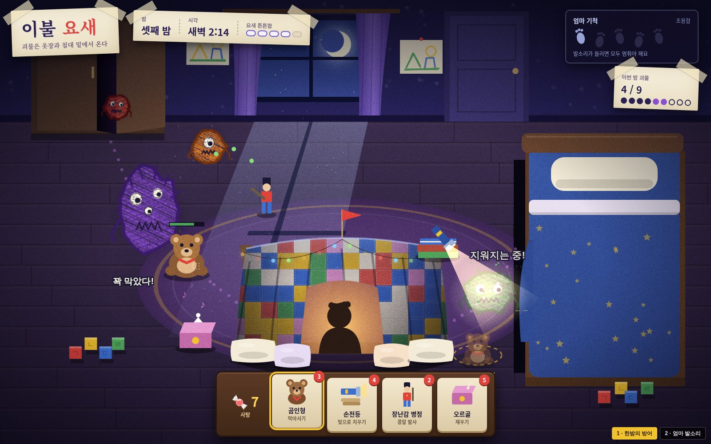
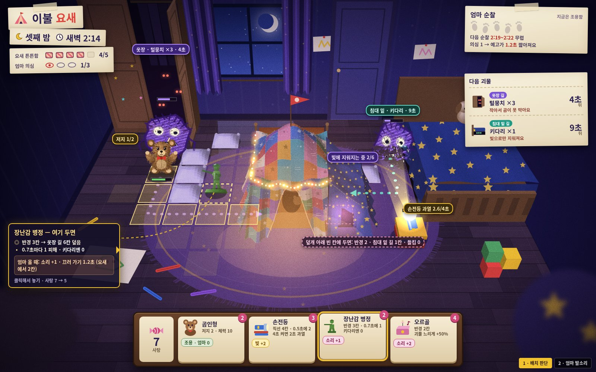
HTML 시안 · 화면 B
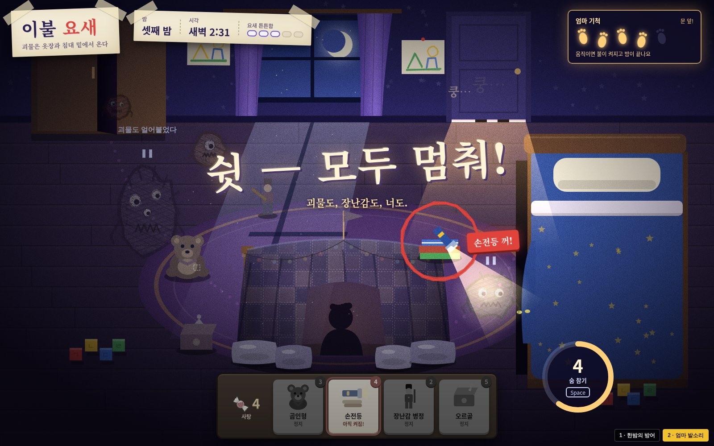
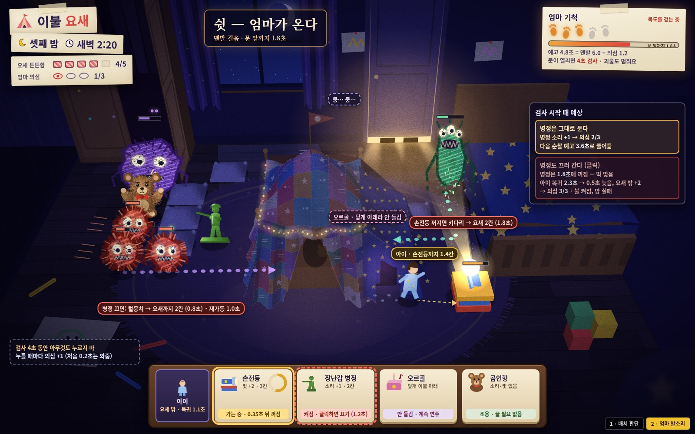
목업 이미지 · A

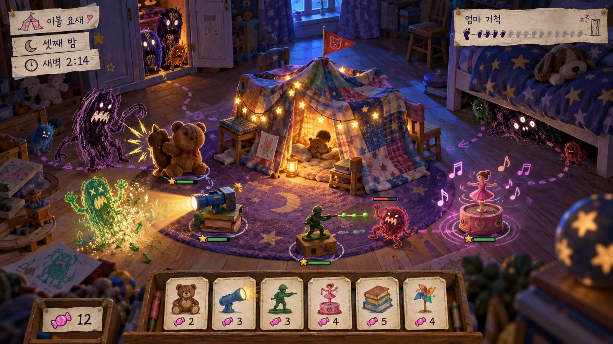

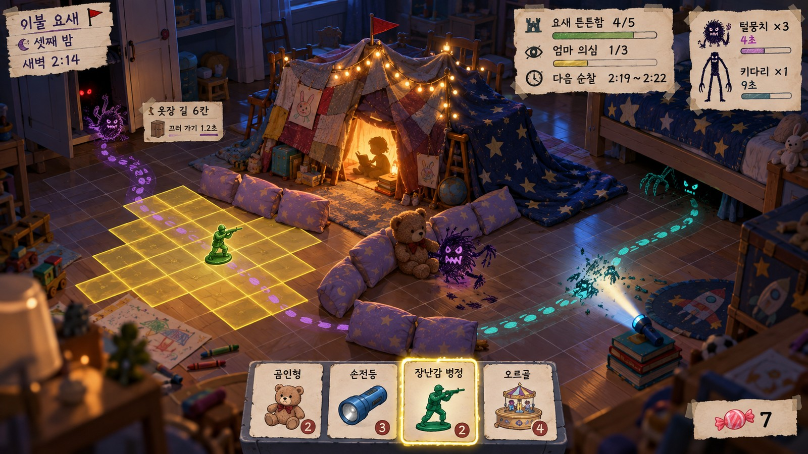
목업 이미지 · B

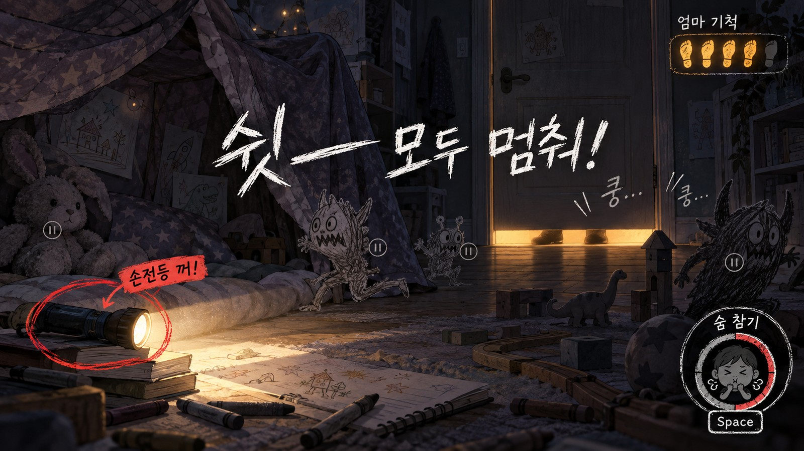

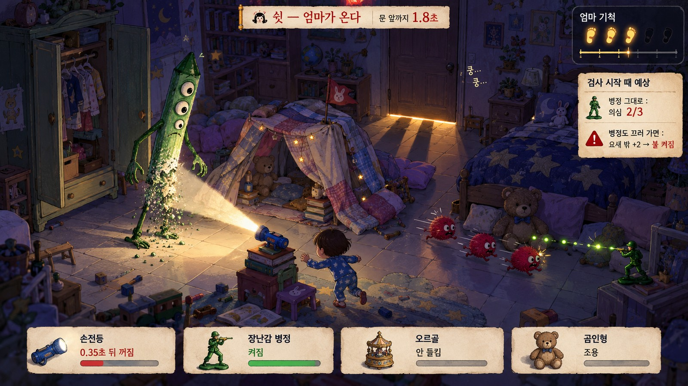
Codex 비판 (critique.md)
판정 (한 문장)
현재안은 방어 배치의 판단 근거가 부족하고 ‘엄마 기척’이 정답 하나인 중단 절차에 그쳐, 첫인상의 긴장감이 사라지면 반복할 이유가 약한 PoC다.
치명적 문제
- 방어 선택은 보이지만 선택의 근거가 없다. HTML A 하단에는 곰·손전등·병정·오르골과 가격이 있지만 사거리, 공격 주기, 저지 수, 적 상성은 없다. 오른쪽 아래 배치 윤곽도 어느 경로를 얼마나 막는지 알려주지 않는다. 사탕 7개로 곰+손전등을 살지 병정+오르골을 살지 판단할 정보가 부족하다. 손전등의 광선 지우기에 제약이 없다면 곰으로 막고 손전등으로 처리하는 조합이 지배할 위험이 있다. 제목과 달리 이불·베개로 요새를 짓는 결정도 자료에서는 확인되지 않는다.
- 엄마 이벤트가 전술을 끊지만 전술을 바꾸지는 않는다. HTML B는 괴물과 장난감이 모두 멈춘 가운데 ‘손전등 꺼!’와 Space를 지시한다. 적도 정지한다면 즉시 끄고 기다리는 행동에 방어상 손해가 없다. 충분히 예고하면 반복 입력 숙제이고, 예고가 짧거나 불분명하면 한 번의 입력 실수로 끝나는 반응속도 시험이다. 원문의 ‘게임 종료’와 화면의 ‘밤이 끝나요’는 손실 범위도 다르다. 둘째 판에 적 구성·배치·엄마 기척이 어떻게 달라지는지 없어 재도전이 암기 이상의 배움을 줄 근거가 없다. 구조적으로는 Plants vs. Zombies식 역할별 방어에 Five Nights at Freddy’s를 연상시키는 야간 위협 대응을 붙인 수준에 머물 위험이 있다.
- HTML은 목업의 공간과 물성을 전달하지 못하며, 이를 메우는 작업이 1주 일정의 병목이다. 목업 A는 의자에 걸친 이불의 처짐, 봉제인형의 털, 바닥에 닿는 그림자와 조명으로 장난감의 존재감을 만든다. HTML A는 정면 벽·수직으로 내려다본 침대·납작한 요새의 시점이 충돌하고, 오른쪽 침대가 큰 면적을 차지해 전장을 압축한다. ‘꽉 막았다!’·‘지워지는 중!’은 결과를 설명하지만 접촉과 소멸의 과정은 정지 화면만으로 입증되지 않는다. 목업 B의 낮은 시점과 문틈 발 그림자는 HTML B에서 먼 문과 빛으로 약화되고, 거대한 중앙 문구가 상황을 덮는다. 목업 B까지 구현 기준이면 카메라 전환과 추가 공간 연출도 필요하다.
개선 요구
- [규칙] 가격 위주의 구매 → 경로별 투자 판단으로 바꿀 것. 다음 적의 출입구·특성·도착 순서를 예고하고, 배치 미리보기에 사거리와 저지 대상을 표시한다. 곰의 저지 한도, 손전등의 과열, 오르골의 적용 대상을 명시해 같은 예산에서도 적 구성에 따라 유효한 조합이 달라지게 한다.
- [규칙] 무조건 끄기 → 방어 중 선택의 결과가 이어지는 정숙 준비로 바꿀 것. 장난감별 정지 준비 시간을 두고, 엄마 접근 예고 동안 공격을 더 유지할지 먼저 끌지 선택하게 한다. 실제 검사 중에는 모두 정지하되, 예고 중 포기한 공격과 재가동 지연이 다음 교전에 남게 한다. 손전등 끄기와 숨 참기의 입력·유예 시간·실패 조건을 각각 확정한다.
- [규칙] 막연한 밤 반복 → 재현 가능한 학습 단위로 바꿀 것. 승리 시점, 사탕 수급, 요새 피해, 발각 시 손실을 정의한다. 실패 화면에는 누수 경로·누적 피해·발각 원인과 입력 시점을 남기고 같은 씨드 재도전과 새 씨드를 구분한다. ‘요새 짓기’를 유지한다면 베개 배치가 경로 또는 저지에 미치는 규칙도 필요하다.
- [규칙] ‘헤드리스 ◎’ → 판정 경계를 명세할 것. 경로 진행도·사거리·피해·정숙 준비·발각을 정수와 ms 기반 순수 C#으로 계산하고, 고정 씨드와 입력 기록으로 재현한다. 발각 경계 시점과 정지 중 피해 발생 여부를 검사한다. 첨부 코드의
Math.random()은 그레인 생성용이므로 규칙 비결정성의 증거는 아니다. 반대로 발소리를 알아듣는지, 꺼짐이 즉시 느껴지는지는 헤드리스로 검증할 수 없다.
- [시안] 설명문 중심 화면 → 행동과 상태가 직접 읽히는 화면으로 바꿀 것. A의 카메라·가구 원근을 통일하고 충돌부 압축, 크레용 소멸, 광선 방향, 배치 범위를 구현한다. B의 중앙 문구는 짧게 제시한 뒤 줄이고 문틈 그림자·남은 유예·꺼야 할 대상을 우선 표시한다. 발소리의 거리 변화, 정숙 전환, 스위치음과 실제 입력 반응을 녹화·청취로 검증한다. 현재 자료로 소리와 움직임의 품질은 판정할 수 없다.
- [시안] 1주 안에 전부 구현한다는 가정 → 제작 병목을 먼저 검증할 것. 첫 단계에서 목업 수준의 방 한 구역, 곰의 저지, 괴물 지우기, 정숙 전환을 실제 실행으로 완성한다. 물성·조명·크레용 애니메이션·공간음이 일정에 맞지 않으면 품질을 낮추지 말고, 줄일 콘텐츠와 카메라 범위를 구체적으로 제시해 합의한다.
유지할 것
옷장과 침대 밑의 두 진입로, 실물 장난감과 크레용 괴물의 재질 대비, 방어 중 따뜻한 빛이 정숙 순간 사라지는 전환.
수용 내역 (response.md)
이불 요새 — 비평 대응표 (v1 → v2)
기준 비평: critique.md(2차, 전체 자료). 결과: 수용 7 · 부분 수용 2 · 기각 0
| # | 항목 | 판정 | 규칙에서 바뀐 것 (pitch-v2) | 시안에서 바뀐 것 (v2/index.html) |
|---|---|---|---|---|
| 치명 1 | 배치 선택에 근거가 없다 | 수용 | 장난감 4종에 사탕·범위·주기·대상·엄마 비용·끄는 시간을 정수로 정했다(§2). 괴물 3종의 상성을 두었다: 털뭉치는 곰이 저지하지 못하고, 키다리는 빛으로만 지워진다(§3). 손전등은 4초 켜지면 2초 과열되고 빛 +2 비용이 있어 "곰+손전등"만으로는 이기지 못한다. 요새 짓기도 규칙이 됐다. 베개 6개는 경로를 바꾸고, 덮개 이불은 은폐 대신 범위 −1이다(§1). | A는 병정을 놓기 직전의 미리보기 화면이다. 반경 3칸 타일 영역, 덮는 경로 칸 수, 엄마 비용, 끄러 가는 시간(1.2초)을 표시한다. 덮개 아래 대안 자리와 그 결과(반경 2, 비용 0)를 같이 띄운다. 카드마다 범위·효과·엄마 비용 칩을 붙였다. |
| 치명 2 | 엄마 이벤트가 정답 입력 하나다 | 수용 | 예고 동안 괴물은 계속 온다. 아이가 한 번에 하나씩 걸어가 끄므로 끄는 순서와 시점이 곧 방어를 포기하는 비용이다. 비용을 조건별로 정했다: 켜진 장난감의 비용 합, 아이가 요새 밖이면 +2, 입력 1회에 +1. 의심 1점마다 다음 예고가 1.2초 짧아지고, 3점이면 불이 켜진다. 재가동 지연이 방어 공백으로 남는다. 패배를 "판 종료"로 통일했다. PvZ·FNAF와 다른 점은 §6에 적었다. | B는 예고 한가운데(문 앞까지 1.8초)를 보여 준다. 끄기 대기열, 아이의 이동, 두 가지 선택지("병정 그대로 → 의심 2/3", "병정도 끄러 감 → 아이 복귀 늦음 +2 → 불 켜짐")의 결과를 보여 준다. 끄면 무엇이 뚫리는지(털뭉치까지 3칸, 키다리까지 2칸)도 판 위에 표시한다. |
| 치명 3 | HTML이 목업의 공간·물성을 전달하지 못하고, 이것이 1주 병목이다 | 부분 수용 | 카메라를 3/4 시점 하나로 통일했다. 1주 계획에 수직 단면과 5일차 관문을 두었다. | A와 B를 같은 원근 투영 하나로 그렸다. 벽·가구·요새·타일이 한 좌표계를 쓴다. 침대를 오른쪽 벽으로 옮겨 전장을 넓혔다. 천은 처짐·주름을 가진 곡면 패치워크로 만들었다. 곰 저지(눌림), 크레용 소멸(지워짐·부스러기), 광선 방향을 그렸다. B의 중앙 대형 문구는 작은 띠로 줄였다. 기각한 부분: 목업 B의 낮은 시점으로 카메라를 전환하는 것. 개선 6이 요구한 병목 축소와 맞추려고, 같은 카메라가 문 쪽으로 12% 다가가는 방식으로 대신했다. 문틈 빛과 발 그림자는 유지했다. |
| 개선 1 | 경로별 투자 판단 | 수용 | 다음 두 파도의 입구·종류·수·남은 초를 예고한다. 곰 저지 2, 손전등 과열, 오르골과 병정의 대상을 명시했다. | 우측 "다음 괴물" 카드를 두었다. 판 위 입구(옷장·침대 밑)에도 예고 표지를 붙였다. 경로는 입구별 색 점선이다. |
| 개선 2 | 정숙 준비 | 부분 수용 | 끄기 시간·재가동 시간·유예·실패 조건을 정했다. 예고 중에는 공격을 유지할지 끌지 고른다. 바꾼 점: 숨 참기를 Space 누르고 버티기 입력으로 만들지 않았다. 판단이 없는 숙제 입력이기 때문이다. 대신 "검사 4초 동안 입력 금지"로 정했다(시작 200ms 유예, 입력 1회에 +1). | B에서 숨 게이지를 없앴다. 입력 금지 안내와 예고 타임라인을 넣었다. |
| 개선 3 | 재현 가능한 학습 단위 | 수용 | 밤 5개, 승리 조건(새벽 4:00), 사탕 수급과 이월, 요새 튼튼함 이월과 회복, 패배 2종을 정했다. 실패 기록 항목을 정했다: 새는 경로, 누적 피해, 발각 원인, 입력과 검사 시작의 ms 차이. 재도전은 같은 씨드와 새 씨드로 나눈다. 판을 넘어 남는 것은 지식(발소리 리듬 3종, 헛걸음)뿐이다. | 시안은 전투 중 두 순간만 다룬다. 실패 화면은 규칙으로만 정의했다(아래 "남은 결함" 참조). |
| 개선 4 | 헤드리스 판정 경계 명세 | 수용 | 50ms 고정 틱, 정수 ms, xorshift 씨드, 입력 기록 재생으로 판정한다. 경계를 정했다: 끄기 완료 = 검사 시작 ms이면 안전, 1ms 늦으면 비용. 검사 중 피해는 0이다. 같은 씨드 1000판으로 지배 전략을 탐색한다. 실제 플레이로만 볼 것(발소리 구별, 딸깍 반응, 소멸 가독성)은 따로 나눴다(§7). | 해당 없음 |
| 개선 5 | 행동과 상태가 직접 읽히는 화면 | 수용 | — | 설명문("꽉 막았다!")을 짧은 상태 표지로 바꿨다: 저지 1/2, 과열 막대, 크레용 소멸, 콩알 탄도. B 문구는 줄이고 문틈 그림자·남은 시간·꺼야 할 대상을 우선 배치했다. 발소리와 스위치 소리는 클릭 후 WebAudio로 넣었다. 실제 품질은 빌드에서 녹화·청취로 검증한다. |
| 개선 6 | 제작 병목 먼저 검증 | 수용 | pitch-v2 "PoC 1주 계획 / 품질 관문"을 두었다. 수직 단면(요새·옷장 길·곰·손전등·순찰 1회)을 목업 수준으로 만들고, 5일차에 비교 관문을 거친다. 불합격이면 줄일 콘텐츠의 순서를 미리 합의한다. 품질 기준은 낮추지 않는다. | — |
유지한 것 (비평 "유지할 것")
- 옷장과 침대 밑의 두 진입로
- 실물 장난감과 크레용 괴물의 재질 대비
- 따뜻한 요새 빛이 정숙 순간에 식는 전환. B에서 방 전체 색온도를 낮추고 문틈 빛만 따뜻하게 두었다.
남은 결함 (알고 있는 것)
- 실패 화면(새는 경로, 발각 원인과 ms)은 시안이 없다.
- HTML 시안의 천·털 질감은 캔버스 그림 수준이다. 목업 A의 봉제 털과 조명 수준은 빌드에서 확보해야 하며, 이 HTML은 그 기준을 대신하지 않는다.
- 발소리 리듬 3종이 실제로 구별되는지는 이 단계에서 검증하지 못했다.
컨셉 v1
이불 요새 (v1)
한 줄: 아이 방에서 이불과 베개로 요새를 짓고 밤마다 상상의 괴물을 막는다
장르: 타워 디펜스 · 헤드리스 ◎
장난감이 방어탑(곰인형=탱커, 손전등=광선). 옷장·침대 밑에서 상상의 괴물이 나온다. 엄마 발소리가 오면 모두 멈춰야 한다(멈추지 않으면 불이 켜지고 게임 종료). 체험: 어린 시절 밤의 공포와 용기. 연출: 달빛 아이 방, 이불 요새, 상상 괴물은 크레용 질감.
컨셉 v2
이불 요새 (v2)
한 줄: 이불·베개로 요새를 짓고 장난감으로 크레용 괴물을 막되, 엄마가 오기 전에 무엇을 끄고 무엇을 계속 싸우게 둘지 고른다. 장르: 미로형 타워 디펜스 + 은폐 관리 · 헤드리스 ◎ (판정 경계는 §7)
v1 → v2 변경 요약
- 장난감마다 범위·주기·대상·엄마 비용(빛/소리)·끄는 시간을 수치로 정했다. 배치 미리보기가 이 값과 "엄마가 올 때 끄러 가는 시간"을 보여 준다.
- 다음 괴물의 입구·종류·도착 시각을 예고한다. 괴물 3종이 서로 다른 장난감을 요구해 같은 사탕으로도 정답 조합이 바뀐다.
- 요새 짓기가 규칙이 됐다. 베개는 경로를 꺾는 벽, 덮개 이불은 그 아래 장난감을 엄마에게서 숨기는 대신 범위를 줄인다.
- 엄마 이벤트: 예고 중에는 괴물이 계속 온다. 아이가 한 번에 하나씩 걸어가서 끄기 때문에 일찍 끄면 방어에 구멍이 나고, 늦게 끄면 의심이 쌓인다. 의심이 쌓이면 다음 예고 시간이 짧아진다.
- Space 누르고 버티기(숨 참기)는 뺐다. 검사 중에는 아무 입력도 하지 않는 것이 숨 참기다.
- 승리·패배·재도전(같은 씨드와 새 씨드), 실패 기록, 판을 넘어 남는 학습(발소리 리듬 3종)을 정했다.
- 카메라는 3/4 시점 하나로 통일했다. 엄마 예고 중에는 문 쪽으로 12% 다가간다(v1 B의 낮은 시점은 쓰지 않는다).
1. 한 판의 구조
한 판은 밤 5개다. 밤 한 번은 게임 시각 1:00→4:00이며 실제로 180초가 걸린다(게임 1분 = 1000ms). 밤마다 괴물 파도 6개와 엄마 순찰 2회가 있다.
- 밤 준비(시간 제한 없음): 요새 지붕 이불(2×2칸, 위치 고정), 덮개 이불 1장(요새에 붙은 2×1칸), 베개 6개(1칸 벽)를 놓는다. 괴물은 BFS 최단 경로로 걷는다. 동률일 때는 위·오른쪽·아래·왼쪽 순서로 정한다. 입구에서 요새까지 가는 길이 모두 막히는 배치는 할 수 없고, 밤 중에는 옮길 수 없다.
- 승리: 새벽 4:00까지 요새 튼튼함이 1 이상이고 의심이 3 미만이면 그 밤을 넘긴다. 다섯째 밤을 넘기면 판 승리다.
- 패배(두 가지 모두 판 종료): ① 요새 튼튼함 0 = 요새 무너짐 ② 의심 3 = 불 켜짐(엄마에게 들킴).
- 이월: 요새 튼튼함은 밤 사이에 +1 회복한다(최대 5). 남은 사탕은 3개까지 넘어간다. 장난감은 밤마다 새로 놓는다. 의심은 밤마다 0으로 돌아간다.
- 사탕: 밤 시작 6개. 낙서·털뭉치를 지우면 +1, 키다리는 +3. 장난감을 되사면 가격의 절반(내림)을 돌려받는다.
2. 장난감 4종(카드 4장) — 거리는 맨해튼 칸 수
| 장난감 | 사탕 | 범위 | 효과 | 엄마 비용 | 끄는 동작 / 재가동 |
|---|---|---|---|---|---|
| 곰인형 | 2 | 자기 칸 | 저지 2(키다리는 2를 차지), 체력 10 | 없음(조용) | 끌 필요 없음 |
| 손전등 | 3 | 직선 4칸(방향 지정) | 500ms마다 2 피해. 4000ms 켜지면 2000ms 과열 | 빛 +2 | 0 / 0ms |
| 장난감 병정 | 2 | 반경 3칸 | 700ms마다 1 피해. 키다리에게는 0 | 소리 +1 | 200 / 1000ms |
| 오르골 | 4 | 반경 2칸 | 칸당 이동 시간 +50% | 소리 +2 | 1500 / 2000ms |
덮개 이불 아래 칸의 장난감은 엄마에게 보이지도 들리지도 않는다(비용 0, 끌 필요 없음). 대신 범위가 −1이다(곰은 해당 없음). 덮개는 요새 옆에 붙어 있어 방어선이 길 끝에만 생긴다. 이것이 대가다.
3. 괴물 3종 — 크레용 낙서
| 괴물 | 체력 | 이동 | 요새 피해 | 특성 |
|---|---|---|---|---|
| 낙서 | 6 | 600ms/칸 | 1 | 기본 |
| 털뭉치 | 3 | 400ms/칸 | 1 | 곰이 저지하지 못한다(다리 사이로 빠져나감) |
| 키다리 | 12 | 900ms/칸 | 2 | 빛으로만 지워진다 |
화면 오른쪽 예고 칸에 다음 두 파도의 입구(옷장/침대 밑)·종류·수·도착까지 남은 초가 뜬다. 파도 구성은 씨드로 정한다.
4. 엄마 순찰 — 예고 · 끄기 · 검사
- 순찰 예상 시각은 ±1분 범위로 미리 보인다(예: "2:19~2:22"). 첫 발소리부터 문 앞까지가 예고이며 발소리 5걸음으로 나뉜다. 기본 예고 시간은 발소리 리듬이 정한다. 슬리퍼는 7200ms, 맨발은 6000ms, 빠른 걸음은 4800ms다. 의심 1점마다 1200ms씩 짧아진다.
- 예고 중에는 괴물이 계속 움직이고 장난감도 계속 싸운다. 장난감을 클릭하면 끄기 대기열에 들어간다. 아이는 한 번에 하나씩 요새에서 왕복한다. 거리는 요새(덮개 포함)에서 가장 가까운 칸까지 센 칸 수다. 1칸당 250ms이고, 편도로 도착한 뒤 끄는 동작을 한다. 예를 들어 3칸 떨어진 손전등을 끄는 데 0.75초, 돌아오기까지 1.5초가 걸린다. 장난감은 끄는 동작이 끝나는 순간 꺼진다.
- 검사(4000ms): 문이 열리면 괴물과 장난감이 모두 멈추고 피해도 생기지 않는다. 검사가 시작되는 ms에 아래를 합산한다.
- 켜져 있는 장난감(덮개 아래 제외)의 비용
- 아이가 요새 밖에 있으면 +2
- 검사 중 입력 1회마다 +1(시작 후 200ms는 유예)
합이 0이면 조용히 지나간다. 1 이상이면 그만큼 의심이 오르고, 3에 이르면 불이 켜진다.
- 헛걸음: 밤마다 최대 1회는 화장실만 들렀다 돌아간다. 이때는 3걸음째에서 멈추는 리듬이 들린다.
- 대가: 끈 장난감은 검사가 끝난 뒤 재가동 시간이 지나야 다시 싸운다. 일찍 끈 만큼 방어 공백이 생기고, 그 공백은 요새 피해로 이어진다.
5. 판을 넘어 남는 것 — 지식만
스탯 해금은 없다(PoC가 검증할 질문: 지식만으로 다시 할 이유가 생기는가). 판을 넘어 남는 것은 세 가지다.
- 발소리 리듬 3종과 헛걸음의 구별
- 괴물별 상성
- 베개 미로 설계
실패 화면에는 다음이 남는다. 새는 경로(입구별로 요새에 닿은 수), 괴물 종류별 누적 피해, 발각 원인(어느 장난감이 켜져 있었는지, 끄기 입력 시각과 검사 시작의 차이 ms). 재도전은 두 가지다. 같은 밤 다시는 같은 씨드로 파도와 순찰이 똑같고, 그 밤을 시작하던 상태로 돌아간다. 새로 시작은 새 씨드로 첫째 밤부터 한다.
6. 기존 게임과 다른 점
- Plants vs. Zombies: 레인이 고정이고 배치 가치의 축이 화력 하나다. 여기서는 배치에 화력과 들킴(거리·빛·소리) 두 축이 있다. 요새 모양(베개·덮개)이 경로와 은폐를 동시에 바꾼다.
- Five Nights at Freddy's: 위협을 감시하고 막는 생존 게임이다. 여기서 엄마는 적이 아니다. 엄마가 오면 적도 멈춘다. 위험한 것은 내 방어가 들키는 것이다. 공포가 아니라 "들킬까 봐 두근거림"이 이 게임의 감정이다.
7. 검증 경계
- 헤드리스(순수 C#, 정수 ms, 50ms 고정 틱, xorshift 씨드, 입력 기록 재생)로 다음을 확인한다.
- BFS 경로와 막힘 금지
- 사거리·저지·과열·둔화
- 끄기 대기열 시각
- 발각 경계: 끄기 완료가 검사 시작 ms와 같으면 안전, 1ms 늦으면 비용이 더해진다.
- 검사 중 피해 0
- 의심에 따른 예고 단축
- 같은 씨드와 같은 입력이면 같은 해시
- 지배 전략 탐색: 한 장난감만 놓기 대 혼합 배치를 같은 씨드로 1000판 돌린다.
- 실제 플레이로만 확인할 것
- 발소리 3종이 첫 1~2걸음 안에 구별되는지, 거리감이 느껴지는지
- 끄기 입력부터 빛이 꺼지고 딸깍 소리가 나기까지 1프레임인지
- 곰 저지의 눌림과 크레용이 지워지는 과정이 읽히는지
- 천의 부피, 따뜻한 요새에서 차가운 방으로 넘어가는 전환
- 사람이 판정할 것: 재미, 긴장, 다시 하고 싶은지
PoC 1주 계획 / 품질 관문
- 1일차: 순수 C# 시뮬레이션과 위 헤드리스 테스트를 만든다. 괴물 파도 표와 순찰 표는 JSON이다.
- 2~4일차: 수직 단면 하나를 목업 A 수준으로 만든다. 범위는 요새, 옷장 길 하나, 곰·손전등, 낙서·털뭉치, 순찰 1회다. 다음을 갖춘다.
- 천 드레이프 메시와 꼬마전구 빛
- 곰의 눌림, 크레용이 지워지는 셰이더와 조각
- 발소리 3종, 딸깍 소리
- 따뜻한 방에서 차가운 방으로 넘어가는 조명 전환과 12% 다가가기
- 5일차 관문: 실제 빌드 스크린샷과 20초 녹화를 이 시안 A/B와 같은 구도로 비교한다. 입력 지연도 측정한다.
- 불합격이면 품질은 그대로 두고 범위를 줄인다. 순서는 침대 밑 길 → 오르골·키다리 → 밤 5개를 2개로다. 이 순서는 미리 합의한다.
- 품질 기준 자체(천·조명·크레용·소리)를 낮추는 안은 없다.
거인의 등 위 마을
HTML 시안 · 화면 A
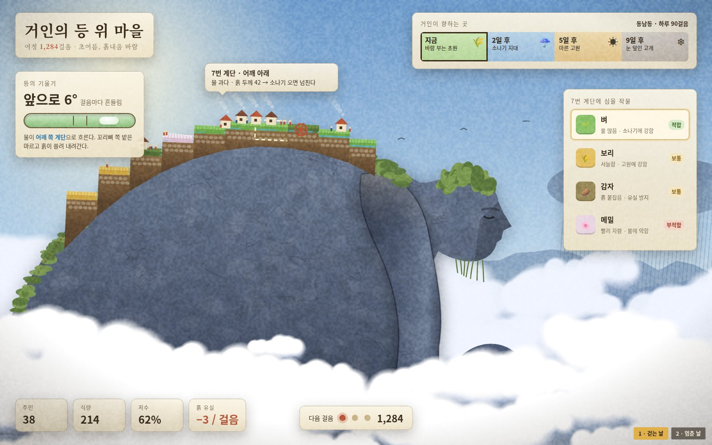
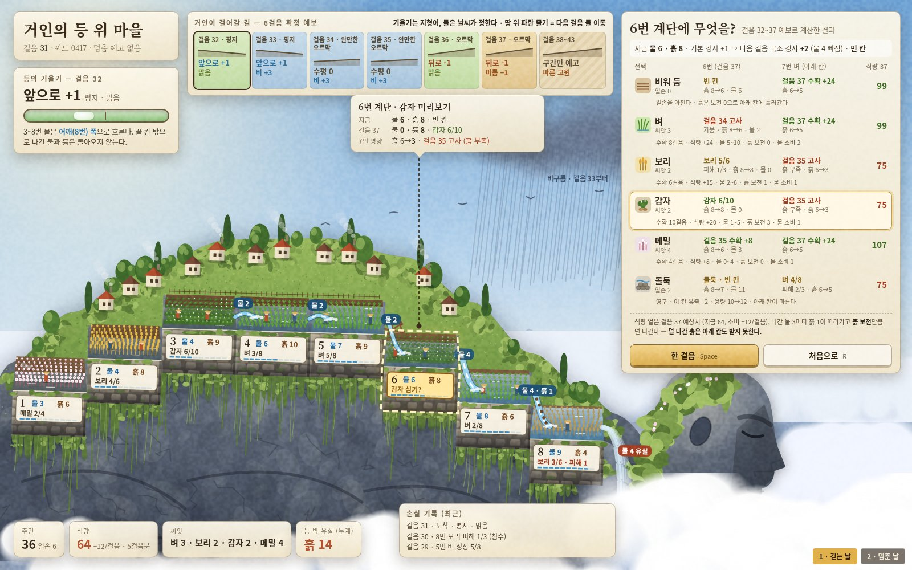
HTML 시안 · 화면 B
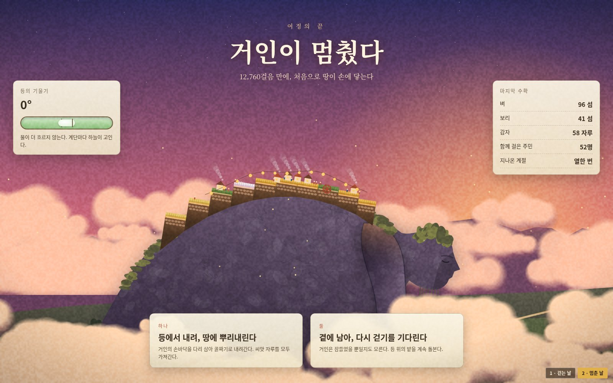
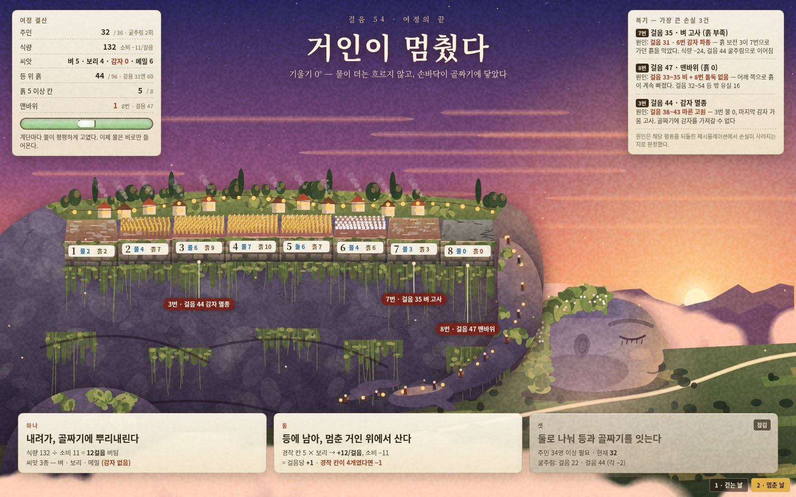
목업 이미지 · A


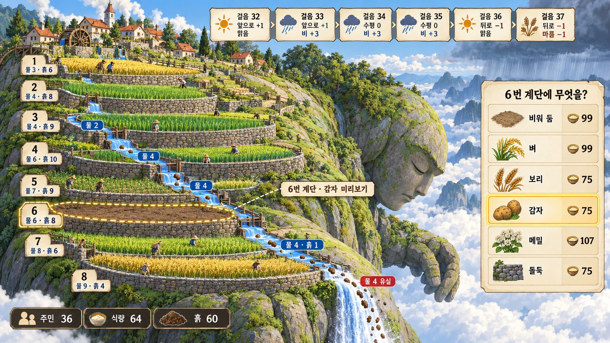
목업 이미지 · B


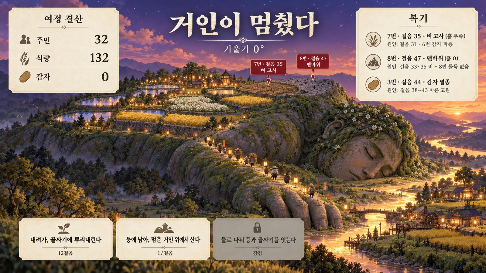
Codex 비판 (critique.md)
판정 (한 문장)
현재 컨셉은 ‘거인 위 농사’라는 배경을 플레이어의 반복 가능한 판단으로 바꾸지 못했고, HTML의 감각 품질도 목업과 크게 달라 이 상태로는 PoC 실패 위험이 높다.
치명적 문제 (최대 3개, 각각 근거)
- 핵심 결정이 ‘적합’ 표시를 누르는 것으로 끝난다. 화면 A 오른쪽은 벼에 ‘적합’, 메밀에 ‘부적합’을 붙여 답을 먼저 알려준다. 반면 성장 기간·수확량·파종 비용·침수 한계는 없으므로, 상단의 ‘2일 후 비·5일 후 고원’ 예보를 장기 계획에 사용할 수 없다. 감자의 유실 방지와 벼의 식량 생산 중 무엇을 포기할지도 계산할 수 없다. 조건별 추천 작물만 반복하거나, 감자의 보전 효과가 강하면 감자만 심는 지배 전략이 생길 위험이 있다. ‘물 과다’인 7번 계단에 벼가 적합하다는 설명도 강우 이후의 안전까지 뜻하는지 불명확하다.
- 생존의 시간 척도와 실패·재도전 구조가 빠져 있다. A의 ‘하루 90걸음’, ‘흙 유실 −3/걸음’, ‘흙 두께 42’가 같은 밭·단위라면 14걸음 만에 흙이 소진된다. 다른 단위라면 UI가 그 차이를 숨긴다. 식량 214도 주민 38명이 며칠 버티는지 알 수 없다. 경로·밭 조건·거인의 정지 시점이 판마다 어떻게 달라지는지, 무엇이 실패인지 제시되지 않았다. B의 두 선택에는 이전 농사가 미친 영향이나 결과 차이가 보이지 않아 긴 생존 과정이 결말 문구 선택으로 끝날 수 있다. The Wandering Village와 ‘거대 생명체 위 정착·이동 중 환경 대응’이라는 중심 설정이 겹치므로, 기울기에 따른 물·흙의 재배분이 실제 전략을 만들지 못하면 차별점도 약하다.
- 시안은 농사와 거인의 규모를 보여줘야 할 자리를 비워 둔다. HTML A는 매끈한 몸통과 구름이 대부분을 차지하고, 조작 대상인 밭은 상단의 얇은 띠다. ‘7번 계단’ 말풍선은 있지만 어느 밭인지 즉시 연결하기 어렵다. 목업 A의 계단별 수로·폭포·주민·석축·식생 밀도가 사라져 ‘기울기→물 이동→작물 피해’가 화면에서 읽히지 않는다. HTML B도 A와 유사한 거인의 자세에 색과 배율을 바꾼 인상이며, 목업 B의 내려앉은 자세·가까워진 골짜기·정착 가능성이 약하다. 따라서 ‘땅이 손에 닿는다’는 문장이 공간으로 입증되지 않는다. 이 격차를 메우는 에셋·조명·동작·음향 제작이 1주 일정의 가장 큰 병목이다.
개선 요구 (번호 목록)
- [규칙] 작물 추천 정답표 → 현재 적합도와 미래 손익을 분리한다. 네 작물에 수확까지 남은 걸음, 식량 수익, 물 허용 범위, 흙 보전량을 정하고 선택 전 예상 결과를 표시한다. 벼의 단기 수익과 감자의 장기 보전처럼 서로 포기해야 하는 이득을 만든다.
- [규칙] 추상적인 기울기 → 밭 사이의 자원 이동 규칙으로 바꾼다. 계단별 물·흙 용량과 연결 방향을 정하고, 파종이 다음 계단에 미치는 영향도 예고한다. 배수 조절을 추가한다면 노동 등 명시적 비용을 붙인다. 단순히 예보에 맞는 작물을 고르는 게임에서 벗어나야 한다.
- [규칙] 불명확한 시간·실패 → 하나의 걸음 단위와 복기 가능한 손실로 통일한다. 식량 소비·성장·침식·기후 전환을 같은 단위로 정의한다. 실패 조건을 명시하고, 손실 시 ‘어느 선택이 몇 걸음 뒤 어떤 피해를 냈는지’를 남긴다. 재도전은 초기 토양과 기후 순서 등을 고정 씨드로 변주하되, 대응할 예고 시간을 보장한다.
- [규칙] ‘헤드리스 ◎’ 선언 → 정수 상태 전이로 검증한다. 순수 C#에서 밭 연결표, 정수 물·흙·식량, 기울기 단계, 씨드로 한 걸음을 계산한다. 물 수지, 음수 방지, 처리 순서에 따른 편향, 동일 입력 재현을 검사한다. 화면용 곡선과 흔들림은 판정에서 분리한다. 제공 코드의
Math.random()은 입자감 생성에 쓰이므로 그것만으로 규칙 재현성 결함이라고 단정할 수는 없다.
- [시안] 몸통 중심 구도 → 밭과 행동 결과 중심 구도로 재배치한다. A의 선택 밭을 윤곽선과 번호로 고정 연결하고 수로 방향·넘침 경계·흙 손실 위치를 직접 표시한다. 파종 전후 작물 변화와 걸음 직후 물·흙 이동을 연속 장면으로 검증한다. B는 거인의 정지 자세와 손바닥에서 골짜기로 이어지는 경로를 보여준다.
- [시안] 범용 합성음과 정지 이미지 → 상태에 연결된 감각 검증으로 바꾼다. 제공 코드의 사인파 충격음·삼각파 발음만으로 발걸음의 무게나 농사 피드백을 충족했다고 볼 수 없다. 착지·물 흐름·침식·선택의 소리와 동작을 실제 입력에 맞춰 확인한다. 첨부 자료만으로 재생 품질이나 지연은 판정할 수 없다. 1주 계획에는 대표 밭의 파종부터 피해까지와 A→B 전환을 먼저 완성하는 품질 관문을 두고, 부족하면 기능 범위 변경안을 승인받아야 한다.
유지할 것 (짧게)
‘걸음이 환경을 바꾼다’는 인과관계와, 계속 걷던 존재가 멈추는 결말의 대비. 둘 다 설명문이 아니라 규칙과 장면으로 증명할 것.
수용 내역 (response.md)
97 거인의 등 위 마을 — 비평 대응 (v1 → v2)
대상: critique.md(2차, 전체 자료). 결과물: pitch-v2.md, v2/index.html, v2/prompts.json. 집계: 수용 8 · 부분 수용 1 · 기각 0
| # | 비평 항목 | 판정 | 규칙에서 바뀐 것 | 시안에서 바뀐 것 | ||
|---|---|---|---|---|---|---|
| 치명 1 | 핵심 결정이 '적합' 표시를 누르는 것으로 끝남 | 수용 | 적합/부적합 라벨을 삭제했다. 작물 4종에 수확 걸음·식량·물 허용 범위·흙 보전·물 소비·최소 흙을 정수로 정했다. 선택 전에 6걸음 뒤 결과를 규칙으로 계산한다. 6번 칸 예시에서 단기 최선은 메밀(식량 107)이다. 감자·보리는 6번 흙을 지키지만 아래 7번 벼를 흙 부족으로 죽인다(75). 벼는 물이 빠지는 칸이라 걸음 34에 고사한다. | A 오른쪽 패널은 선택지 6개 × {6번 결과, 7번 영향, 걸음 37 식량}을 보여 준다. 숫자는 페이지에 들어 있는 같은 규칙 코드가 실시간으로 계산한다. 작물마다 능력치 한 줄이 붙는다. | ||
| 치명 2 | 시간 척도·실패·재도전이 없음 · 결말이 과거와 무관 · The Wandering Village와 겹침 | 수용 | 시간 단위는 걸음 하나다(1턴). '하루 90걸음'과 '12,760걸음'은 폐기했다. v1의 흙 42 · −3/걸음 모순을 없앴다. 흙은 칸 사이로 이동하고 끝 칸 밖으로 나간 것만 유실된다. 식량 소비는 ⌈주민/3⌉/걸음이다(36명 → 12, 식량 64 = 5걸음분). 실패는 주민 18 이하 또는 맨바위 4칸. 한 판은 48~60걸음이다. 결말 수치는 여정 상태에서 공식으로 계산하고, 세 번째 선택지는 주민 34명 이상일 때만 열린다. TWV와의 차이는 pitch에 적었다(조종 불가·건물 없음·8칸 그래프 전파 예측이 중심). | B의 선택 카드마다 계산된 결과가 붙는다(12걸음 버팀 / 걸음당 +1, 4칸이었다면 −1 / 잠김: 주민 32). 결산 카드와 복기 카드를 추가했다. | ||
| 치명 3 | 몸통이 화면을 차지하고 밭은 얇은 띠 · 목업의 수로·폭포·주민·석축이 사라짐 · B 자세가 A와 같음 | 수용 | — | A: 카메라를 당겨 8칸 계단이 화면 가로의 2/3를 차지한다. 칸마다 석축 벽, 번호판(물·흙·작물·물 눈금), 물 표면 높이, 수로 물줄기(굵기 = 이동량), 흙 알갱이, 8번 어깨 폭포 + '물 4 유실' 표시가 있다. 언덕 위 마을·물레방아·연기·주민 14명을 넣었다. B: 거인이 엎드려 머리를 땅에 대고, 팔을 내려 손바닥을 골짜기에 펼친다. 팔뚝 위로 등불 길과 주민 행렬이 이어진다. 골짜기와 강이 화면 아래까지 다가왔다. | ||
| 개선 1 | 정답표 → 현재 적합도와 미래 손익 분리 | 수용 | 치명 1과 같다. 벼(단기 식량, 흙 보전 0) · 감자(보전 3, 느림, 비에 약함, 아래 칸 흙 공급을 끊음) · 보리(중간) · 메밀(빠름, 소량) 사이에 서로 포기해야 하는 이득이 생긴다. 지배 전략 여부는 1일차 전략 봇 시뮬레이션을 관문으로 확인한다. | 패널의 '식량 37' 열과 '7번 영향' 열로 단기/장기 손익이 나란히 보인다. | ||
| 개선 2 | 추상적 기울기 → 밭 사이 자원 이동 규칙 | 수용 | 8칸 연결 그래프를 만들었다. 칸마다 물 0~10 · 흙 0~12이고 기본 경사(1·2번 −1, 3~5번 0, 6~8번 +1)에 걸음 기울기(지형 −2~+2)를 더한다. 이동량은 min(물, 2× | 경사 | ), 용량을 넘치면 같은 방향으로 흐른다. 물 3마다 흙 1이 따라가고 보전값만큼 줄어든다. 스냅숏으로 동시 계산해 순서 편향이 없다. 배수 조절은 돌둑(일손 2, 유출 −2 · 용량 +2) 이다. 일손 = ⌊주민/6⌋. | 기울기 카드가 '3~8번 물은 어깨 쪽으로'처럼 칸 범위를 보여 준다. 돌둑을 고르면 6번은 물 11을 붙잡고 7번 벼는 가뭄 피해 2/3이 된다. 이 결과가 표에 나온다. |
| 개선 3 | 시간·실패 통일 · 복기 가능한 손실 · 씨드 변주 · 예고 보장 | 수용 | 성장·침식·날씨·소비를 모두 걸음 단위로 처리한다. 손실 기록은 {걸음, 칸, 직접 원인}이다. 원인 행동은 반사실 재시뮬레이션(최근 12걸음의 행동을 하나씩 되돌려 손실이 사라지는지)으로 찾는다. 씨드는 경로·칸별 초기 흙 6~10·초기 씨앗·멈춤 걸음 48~60을 정한다. 다음 6걸음은 정확히, 7~12걸음은 구간 종류만 예보한다. 멈춤은 6걸음 전에 예고한다. | A 하단에 '손실 기록(최근)'을 두었다(한 걸음 진행 시 갱신). B 복기 카드는 "걸음 35 · 7번 벼 고사 ← 걸음 31 · 6번 감자 파종"처럼 A의 선택과 이어진다. | ||
| 개선 4 | '헤드리스 ◎' → 정수 상태 전이로 검증 | 수용 | pitch에 처리 순서 6단계를 고정했다. 1일차 테스트: 물 수지, 음수 없음, 좌우 반전 대칭, 씨드 재현, 예시 표 재현. 판정과 화면 곡선·흔들림은 분리한다. | 시안 안의 규칙 함수(step)가 pitch와 같은 정수 규칙이고, 표의 숫자는 여기서 나온다. 비평이 지적한 대로 Math.random은 결함의 증거가 아니었지만, v2에서는 입자·질감까지 전부 씨드 난수로 바꿨다(Math.random 0건). | ||
| 개선 5 | 몸통 중심 → 밭·행동 결과 중심 구도 · 연속 장면 · B의 정지 자세와 손바닥 경로 | 수용 | 멈추면 거인이 엎드려 기본 경사까지 0이 된다는 규칙을 추가했다. 그래서 B의 '물이 더는 흐르지 않는다'가 규칙과 맞는다. | 선택 칸은 점선 윤곽 + 번호판 강조 + 말풍선 리더선으로 고정 연결했다. 말풍선에 지금 → 걸음 37 → 7번 영향이 있다. 작물을 고르면 6번에 반투명 미리보기가 나온다. Space(한 걸음) 를 누르면 실제로 한 걸음이 진행된다: 화면 흔들림, 물줄기 굵어짐, 수치 갱신, 예보가 한 칸 밀림, 손실 기록 추가. 이것이 파종 전후의 연속 장면이다. B는 자세·지형이 A와 다르다(엎드림, 머리를 땅에 댐, 손바닥 길, 가까운 골짜기, 평평하게 고인 물). | ||
| 개선 6 | 범용 합성음·정지 이미지 → 상태에 연결된 감각 검증 · 1주 품질 관문 | 부분 수용 | pitch에 'PoC 1주 계획 / 품질 관문'을 추가했다. 2~3일차에 6·7·8번 세 칸으로 파종→피해를 완성한 뒤 관문 1(실제 빌드 녹화 vs 시안 A, 입력→반응 지연 프레임 계수), 4~5일차에 A→B 전환 뒤 관문 2를 둔다. 미달이면 칸·작물 수를 줄이는 변경안을 사용자에게 승인받는다. 연출 품질은 줄이지 않는다. | 시안 소리를 상태에 연결했다. 착지는 저역 사인 + 저역통과 잡음 + 흙 부스러기 14알 + 물 출렁이다. 물 흐름 루프의 음량·필터는 다음 걸음 총 이동량을 따른다. 작물·칸 선택음은 종류마다 다르다. 부분 수용인 이유: 실제 입력 지연과 손맛은 목업(브라우저 합성음)으로 입증할 수 없다. CLAUDE.md 기준으로도 목업 소리는 증거가 아니므로, 이 항목의 완료 판정은 PoC 빌드의 관문 1·2로 넘긴다. |
남은 결함 (v2 시안 · 규칙)
- 그림: 여전히 캔버스 절차 드로잉이라 목업 이미지의 석축 입체감, 폭포 수량감, 식생 밀도에 못 미친다. 거인 얼굴·손은 단순한 실루엣 수준이다. A의 거인 머리는 오른쪽 패널에 일부 가린다.
- 규칙 균형은 미검증: 예시 한 장면에서는 메밀이 단기 최선이다. 판 전체에서 한 작물이 지배하는지는 전략 봇 시뮬레이션 전에는 모른다. 식량 흐름(걸음 31~37에 수확 5건)이 넉넉해 긴장이 약할 수도 있다.
- B 수치는 서술로 맞췄다: B의 결산(걸음 54)은 A 상태에서 규칙으로 끝까지 돌린 값이 아니라, 규칙과 모순 없게 맞춘 대표값이다(흙 60 → 44 = 유실 16, 5칸 × 15 ÷ 6 = 12 등 산술은 일치).
- 원인 추적의 한계: 반사실 재시뮬레이션은 행동 하나를 되돌리는 방식이라, 두 선택이 겹쳐서 난 손실은 한쪽으로만 기록될 수 있다.
- 예보의 단순화: 날씨가 모든 칸에 똑같이 내린다. 기울기 방향 규칙(국소 경사)은 칸 높이 그림과 완전히 일치하지 않는다(1·2번은 기울기 +1에서도 그림상 꼬리 쪽으로 기울어 보인다).
컨셉 v1
거인의 등 위 마을 (v1)
한 줄: 걷는 거인의 등 위에서 농사짓는다. 거인의 걸음이 계절이다
장르: 생존 · 경영 · 헤드리스 ◎
거인은 쉬지 않고 걷는다. 걸음마다 등이 기울어 물이 흐르고 흙이 쏠린다. 거인이 가는 방향의 기후를 예측해 작물을 고른다. 거인이 멈추는 날이 온다. 체험: 거대한 생명 위의 작은 삶. 연출: 구름 위 거인 실루엣, 등 위의 계단식 밭, 먼 풍경.
컨셉 v2
거인의 등 위 마을 (v2)
한 줄: 걷는 거인의 등에 깎은 여덟 칸 계단밭. 거인의 걸음이 등을 기울이면 물과 흙이 이웃 칸으로 흘러간다 — 한 칸에 심은 작물이 아래 칸의 운명을 바꾼다. 장르: 생존 · 경영 (턴제, 1턴 = 1걸음) · 헤드리스 검증 가능 (정수 상태 전이 + 고정 씨드)
v1 → v2 변경 요약
- '적합/부적합' 표시 삭제 → 작물 4종 × 정수 능력치(수확 걸음·식량·물 허용 범위·흙 보전·물 소비·최소 흙). 선택 전에 6걸음 뒤 결과를 규칙으로 계산해 보여 준다.
- 추상적 '기울기' → 8칸 계단 그래프. 칸마다 물(0~10)·흙(0~12) 정수, 기울기에 따라 이웃 칸으로 이동.
- 시간 단위를 걸음 하나로 통일(성장·침식·날씨·식량 소비). '하루 90걸음', '12,760걸음'은 폐기. 한 판 = 48~60걸음.
- v1의 흙 42 · −3/걸음(14걸음이면 바닥) 모순 제거 → 흙은 칸별로 이동하며, 끝 칸 밖으로 나간 것만 유실. 누계를 따로 표시.
- 실패 조건 · 원인 추적 손실 기록(반사실 재시뮬레이션) · 씨드 변주 · 예보 보장 추가.
- 결말 선택지의 결과를 여정 상태에서 계산. 세 번째 선택지는 조건 미달이면 잠긴다.
- 시안: 몸통 대신 계단밭이 화면 중심. 번호·물·흙·흐름·유실을 땅 위에 표시. B는 거인이 엎드려 손바닥을 골짜기에 내려놓는다.
규칙 (전부 정수)
계단 8칸: 1번(꼬리) … 8번(어깨). 기본 경사 1·2번 −1(꼬리 쪽), 3~5번 0, 6~8번 +1(어깨 쪽). 걸음 기울기(지형에서 정해짐): 내리막 +2 · 평지 +1 · 완만한 오르막 0 · 오르막 −1 · 가파른 오르막 −2.
한 걸음 처리 순서 (고정. 이동은 걸음 시작 시점의 스냅숏으로 동시에 계산 → 처리 순서 편향 없음)
- 날씨: 비 +3 / 맑음 0 / 마름 −1 (모든 칸).
- 흐름: 칸의 국소 경사 = 기본 경사 + 걸음 기울기 (−2~+2로 자름). 경사 쪽 이웃으로 물 min(물, 2×|경사|) 이동. 이동 뒤 용량 10(돌둑 12)을 넘는 물은 같은 방향으로 넘친다. 경사 0 칸이 넘치면 옆으로 흘러 사라진다.
- 흙: 칸에서 나간 물 3마다 흙 1이 따라간다. 작물의 흙 보전만큼 줄어든다. 1번 왼쪽 · 8번 오른쪽 밖으로 나간 물·흙은 영구 유실. 받는 칸은 흙 12 초과분을 잃는다.
- 작물 판정: 물이 허용 범위 안이고 흙 ≥ 최소 흙이면 성장 +1. 아니면 피해 +1(원인: 침수·가뭄·흙 부족). 피해가 3걸음 이어지면 고사. 성장 = 수확 걸음이면 식량 + 씨앗 +2.
- 작물의 물 소비.
- 식량 −⌈주민 ÷ 3⌉. 모자라면 식량 0, 주민 −2(굶주림).
| 작물 | 수확까지 | 식량 | 물 허용 | 흙 보전 | 물 소비 | 최소 흙 |
|---|---|---|---|---|---|---|
| 벼 | 8걸음 | +24 | 5~10 | 0 | 2 | 5 |
| 보리 | 6걸음 | +15 | 2~6 | 1 | 1 | 4 |
| 감자 | 10걸음 | +20 | 1~5 | 3 | 1 | 4 |
| 메밀 | 4걸음 | +8 | 0~4 | 0 | 1 | 2 |
행동 (걸음마다 일손 = ⌊주민 ÷ 6⌋): 파종 1일손 + 씨앗 1 · 돌둑 2일손(영구, 그 칸 유출 −2, 용량 +2) · 뽑기 1일손. 트레이드오프가 생기는 곳: 벼는 식량/걸음이 가장 높지만 물이 모이는 아래 칸에서만 살고 흙을 잡지 못한다. 감자는 흙을 잡지만 느리고 비에 약하며, 흙을 잡으면 아래 칸으로 가던 흙도 끊긴다. 돌둑은 물을 붙잡는 대신 아래 칸을 말린다.
예시 (시안 A와 같은 판, 걸음 31, 6번 칸이 빈 상태, 식량 64, 주민 36) — 걸음 32~37 예보에서 6번에 무엇을 하느냐:
| 선택 | 6번 (걸음 37) | 7번 벼(성장 2/8) | 걸음 37 식량 |
|---|---|---|---|
| 비워 둠 | 흙 8→6 | 걸음 37 수확 +24 | 99 |
| 벼 | 걸음 34 가뭄 고사 (6번은 물이 빠지는 칸) | 수확 +24 | 99 |
| 보리 | 성장 5/6, 흙 8 유지 | 걸음 35 흙 부족 고사 | 75 |
| 감자 | 성장 6/10, 흙 8 유지 | 걸음 35 흙 부족 고사 | 75 |
| 메밀 | 걸음 35 수확 +8, 흙 8→6 | 수확 +24 | 107 |
| 돌둑 | 물 11 붙잡음 | 가뭄 피해 2/3 | 75 |
단기 정답은 메밀이지만 6번 흙이 계속 줄고, 걸음 38~ 마른 고원에서 6번은 가뭄 칸이 된다. 이 판단이 걸음마다 여덟 칸에서 다르게 나온다.
실패 · 변주 · 복기
- 실패: 주민 18명 이하(마을 해산) 또는 흙 0인 칸(맨바위) 4개 이상.
- 완주: 거인이 멈출 때까지 버틴다. 멈춤은 걸음 48~60 사이, 6걸음 전에 예고("거인이 느려진다").
- 씨드 변주: 경로(구간 종류·길이 → 기울기·날씨 순서), 칸별 초기 흙 6~10, 초기 씨앗, 멈춤 걸음. 예보 보장: 다음 6걸음은 기울기·날씨 정확히, 7~12걸음은 구간 종류만.
- 손실 기록: 고사 · 등 밖 흙 유실 · 굶주림마다 {걸음, 칸, 직접 원인}을 남긴다. 원인 선택은 반사실 재시뮬레이션으로 찾는다 — 최근 12걸음의 플레이어 행동을 하나씩 되돌려 다시 돌렸을 때 손실이 사라지면 그 행동이 원인이다(순수 로직이라 즉시 계산). 예: "걸음 35 · 7번 벼 고사(흙 부족) ← 걸음 31 · 6번 감자 파종".
결말 — 이전 플레이에서 계산
거인이 멈추면 엎드린다: 걸음 기울기와 기본 경사가 모두 0 → 물이 더 흐르지 않는다(이후 물은 비로만). 시안 B의 판(걸음 54, 주민 32, 식량 132, 등 위 흙 44/96, 흙 5 이상 칸 5개, 씨앗 벼5·보리4·감자0·메밀6):
- 내려가 골짜기에 뿌리내린다 — 버틸 걸음 = ⌊식량 ÷ ⌈주민/3⌉⌋ = ⌊132 ÷ 11⌋ = 12걸음. 가진 씨앗 3종(감자 없음).
- 등에 남는다 — 물은 비로만 들어오므로 보리 기준. 수익 = ⌊경작 칸 × 15 ÷ 6⌋ = +12/걸음, 소비 −11 → +1/걸음. 경작 칸이 4개였다면 −1.
- 둘로 나눠 등과 골짜기를 잇는다 — 주민 34명 이상일 때만. 이 판은 32명(굶주림 2회)이라 잠김.
화면에는 가장 큰 손실 3건의 복기를 함께 보여 준다. 긴 생존이 문구 선택으로 끝나지 않고, 지나온 침식과 굶주림이 선택지의 숫자가 된다.
The Wandering Village와의 차이
그쪽은 경로 선택 · 생물과의 관계 · 건물 기술 트리 · 포자 오염이 중심인 콜로니 경영이다. 이쪽은 거인을 조종하지 못하고 건물도 늘지 않는다. 판단은 전부 8칸 그래프 위 물·흙의 전파를 예측하는 일이다. 거인은 날씨가 아니라 땅의 기울기를 바꾸는 존재이고, 한 칸의 선택이 이웃 칸으로 번지는 것이 재미의 중심이다.
연출 기준
- 걸음 = 저역 쿵 + 흙 부스러기 + 물 출렁. 착지 순간 계단 전체가 기울어지고 물줄기가 굵어진다.
- 물: 칸 사이 물줄기 굵기 = 이동량. 끝 칸 밖은 몸을 타고 떨어지는 폭포 + 구름 위 물안개. 흐름 루프음의 음량·필터를 총 이동량에 연결.
- 흙: 이동량만큼 갈색 알갱이가 물줄기를 따라 흐르고, 유실분은 덩어리로 떨어진다. 흙이 얕을수록 밭 표면에 암반이 드러나고 0이면 맨바위.
- 작물: 성장 단계별 크기, 피해 시 누렇게 처짐, 고사 시 쓰러짐. 수확은 황금빛 + 주민이 모여든다.
- B: 거인이 무릎을 꿇고 엎드려 머리를 땅에 대고, 한 손을 골짜기에 펼친다. 팔뚝이 길이 된다. 계단의 물은 평평하게 고여 노을을 비춘다.
PoC 1주 계획 / 품질 관문
- 1일차 — 규칙: 순수 C#(UnityEngine 없음). 테스트: 물 수지(날씨 입력 = 저장 변화 + 유실 + 소비), 음수 없음, 좌우 반전 대칭(순서 편향 없음), 같은 씨드 → 같은 로그, 위 예시 표 재현. 전략 봇(작물 한 종만 × 4, 혼합 1) × 씨드 200 — 단일 작물 봇이 혼합 봇보다 생존률이 높으면 수치를 조정한다.
- 2~3일차 — 대표 장면: 6·7·8번 세 칸으로 파종 → 걸음 → 넘침 → 흙 유실 → 고사까지 완성. 착지 · 물 · 흙 · 선택 소리를 실제 입력에 연결. 관문 1: 실제 빌드 녹화를 시안 A와 나란히 비교 + 입력→반응 지연 측정(프레임 계수). 미달이면 칸 수 · 작물 수를 줄이는 변경안을 사용자에게 승인받는다 — 연출 품질은 줄이지 않는다.
- 4~5일차 — A→B 전환: 멈춤 예고 → 감속 → 엎드림 → 손바닥 길 → 수면이 평평해짐 → 결말 선택. 관문 2: 연속 캡처를 시안 B와 비교.
- 6~7일차: 8칸 전체 루프, 복기 로그, 결말 3안. 실제 플레이 녹화와 미달 목록 작성.
- 최대 위험: 이끼 덮인 거인 몸체와 계단 석축 에셋. 암석 스캔(Poly Haven) + 모듈 키트 조립 + 이끼 데칼로 2일차까지 확보하지 못하면 즉시 보고한다.